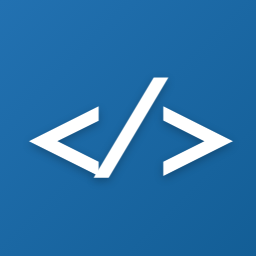

📖
Explain
Get a clear, high-level summary followed by a walkthrough of the important parts — great for unfamiliar code and code review.

Code StudioPowered by Claude
Code Studio adds AI-powered explanations, refactoring suggestions, and documentation to the tools you already use. It's language-agnostic — paste code in any language and Claude figures out the rest.
🔑 Bring your own Anthropic API key — your code and key stay yours.
Get a clear, high-level summary followed by a walkthrough of the important parts — great for unfamiliar code and code review.
Concrete, idiomatic suggestions for readability, correctness, and performance — each with a short "why" and example snippet.
Generate doc comments in the language's conventional style — JSDoc, docstrings, Javadoc — plus a module overview.
One engine, wrapped for each platform. Install the one you need — each is bring-your-own-key.
Plugin for the WP admin — a tool page plus settings.
Get plugin →Right-click any selection → Explain / Refactor / Document.
Get extension →code-studio explain file.py — pipe or pass a file.
npm i -g @farseman/code-studio
Get on npm →
IntelliJ, PyCharm, WebStorm, Android Studio & more.
Get plugin →Paste code in the popup and stream the answer.
Get extension →Slack, Cursor, and other platforms are on the way.
Stay tunedGrab Code Studio for your platform and paste your Anthropic API key. Get one at console.anthropic.com.
Highlight a snippet, open a file, or paste into the box — any language.
Claude responds in seconds, streamed right where you're working.
Code Studio has no server of its own. Requests go straight from your device to the Anthropic API using your key — nothing is stored or proxied.